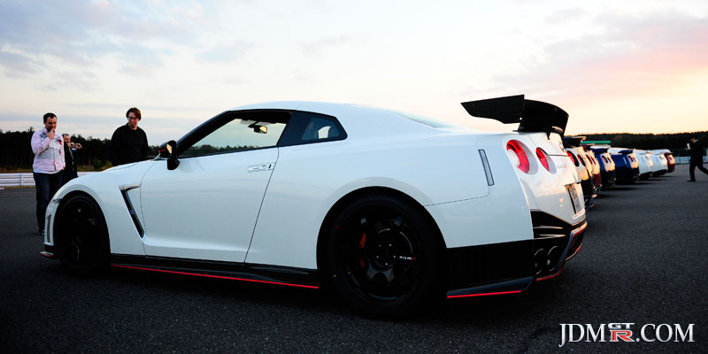

Nissan skyline r35



The Nissan GT-R is a 2-door coupe produced by Nissan and first released in Japan in 2007. The u.s official launch was seven months after on July 7, 2008.It is the successor to the Nissan skyline gtr r34 although it is no longer part of the skyline classification.the GTR is a twin-turbo 6 cylynder engine and the signature four round tail lights.